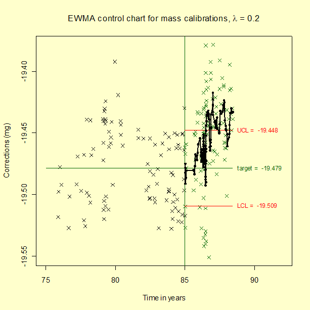

|
2.
Measurement Process Characterization
2.3. Calibration 2.3.5. Control of artifact calibration 2.3.5.2. Control of bias and long-term variability
|
|||
| Small changes only become obvious over time | Unfortunately, it takes time for the patterns in the data to emerge because individual violations of the control limits do not necessarily point to a permanent shift in the process. The Shewhart control chart is not powerful for detecting small changes, say of the order of at most one standard deviation, which appears to be the case for the calibration data shown on the previous page. The EWMA (exponentially weighted moving average) control chart is better suited for this purpose. | ||
| Explanation of EWMA statistic at the kilogram level | The exponentially weighted moving average (EWMA) is a statistic for monitoring the process that averages the data in a way that gives less and less weight to data as they are further removed in time from the current measurement. The EWMA statistic at time t is computed recursively from individual data points which are ordered in time to be $$ Y_1, \, Y_2, \, \ldots, \, Y_t $$ where the first EWMA statistic is the average of historical data. $$ EWMA_{\, t+1} = \lambda Y_t + (1-\lambda)EWMA_{\, t} $$ | ||
| Control mechanism for EWMA | The EWMA control chart can be made sensitive to small changes or a gradual drift in the process by the choice of the weighting factor, \( \lambda \). A weighting factor between 0.2 - 0.3 has been suggested for this purpose (Hunter), and 0.15 is another popular choice. | ||
| Limits for the control chart | The target or center line for the control chart is the average of historical data. The upper (UCL) and lower (LCL) limits are $$ UCL = EWMA_{\, 1} + {\large s} k \sqrt{\frac{\lambda}{2-\lambda}} $$ $$ LCL = EWMA_{\, 1} - {\large s} k \sqrt{\frac{\lambda}{2-\lambda}} $$ where s is the standard deviation of the historical data; the function under the radical is a good approximation to the component of the standard deviation of the EWMA statistic that is a function of time; and k is the multiplicative factor, defined in the same manner as for the Shewhart control chart, which is usually taken to be 3. | ||
| Example of EWMA chart for check standard data for kilogram calibrations showing multiple violations of the control limits for the EWMA statistics |
The target (average) and process standard deviation are computed from
the check standard data taken prior to 1985. The computation of the
EWMA statistic begins with the data taken at the start of 1985. In the
control chart below, the control data after 1985 are shown in green, and
the EWMA statistics are shown as black dots superimposed on the raw
data. The control limits are calculated according to the equation above
where the process standard deviation, s = 0.03065 mg and
k = 3. The EWMA statistics, and not the raw data, are of interest
in looking for out-of-control signals. Because the EWMA statistic
is a weighted average, it has a smaller standard deviation than a single
control measurement, and, therefore, the EWMA control limits are
narrower than the limits for a Shewhart control chart.

The EWMA control chart for mass calibrations can be
generated using both Dataplot code
and |
||
| Interpretation of the control chart | The EWMA control chart shows many violations of the control limits starting at approximately the mid-point of 1986. This pattern emerges because the process average has actually shifted about one standard deviation, and the EWMA control chart is sensitive to small changes. | ||